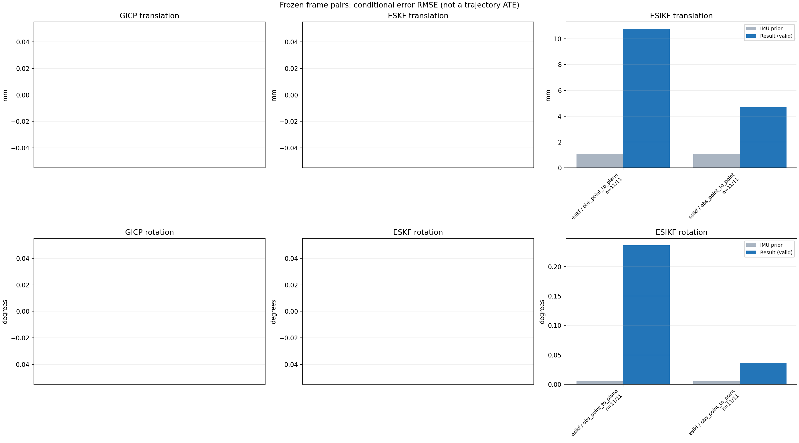

20261015_112845_yaw_left · depth=disparity_cache · cache=6fe6fad09ad4fd67ea2c
模型视差：/home/ubuntu22/slam/SIO_SLAM/models/tensorrt/disp_896x448_fp16.plan；engine SHA256=604cf6ac1f705c877260711730dd5d2d58c2a21f3020c03c668401ef7fb1e768。输入为生产裁剪与光照处理后的 RGB 0..255；此实验使用原始浮点像素视差，不应用完整前端的邻域视差后处理。
原始 ONNX SHA256：e9f49736a65d68d06681add463866b6defdf78fdd7f4f50f6cc941b682fdc0bc。
代价体图改写验证：ONNX Runtime 固定随机特征输入，最大绝对误差 0；该项检查图改写，完整模型精度仍需由录制数据评估。
配准代码版本：744ac2d993ae629b0cc44a3b1d995e04ab4fad48；观测生成版本：744ac2d993ae629b0cc44a3b1d995e04ab4fad48。
固定图像对与纯 IMU 先验；ESKF 回放固定 GICP 观测，ESIKF 直接读取点云。真值只用于此报告。
同时查看 converged 与 solver_status：上游默认 Stereo 在 max_iter / stopped_at_minimum 时也可能置 converged=true。valid 表示输入检查通过，不表示精度提升。欧氏 GICP 未提供独立的点距 RMSE，该列显示 NaN。
误差按每对图像的锚点计算，单位 m / degrees。此处 RMSE 不是全序列 ATE；末帧受同一锚点条件约束。NIS 与条件马氏距离是诊断量，少量相关图像对不能用于宣称协方差已校准。
全部指标 CSV · R / P 矩阵 CSV · Stereo 求解逐轮 CSV · ESIKF 逐轮轨迹 CSV · 末轮 H / R / K_pose 矩阵 CSV · 配置快照 · 矢量图
unflagged 排除纯惯性先验平移误差超过 50 mm 的图像对；whitened 为误差按协方差白化后的每自由度均值，协方差与实际误差相符时约为 1。prior_whitened 用真值误差只检验先验 P；NIS 为 ESIKF 首轮 rᵀ(P+R)⁻¹r，不用真值，检验的是 P+R 的总量，单靠它分不开 P 与 R，偏差、错误对应和线性化误差也会抬高它。观测方差超过先验方差 1e+04 倍的方向视为不可观，从 NIS 及其自由度中去掉（nis_dof）。一致时 nis_per_dof 均值约 1、nis_over_chi2_median 中位数约 1；帧对少且共享序列，超出 95% 分位的比例只作参考。
| stage | method | variant | valid | total | result_translation_rmse_m | result_rotation_rmse_deg | result_translation_median_m | result_rotation_median_deg | result_translation_rmse_unflagged_m | result_rotation_rmse_unflagged_deg | improved_translation | improved_rotation | posterior_whitened_by_P_rot_mean | posterior_whitened_by_P_trans_mean | prior_whitened_by_P_rot_mean | prior_whitened_by_P_trans_mean | nis_per_dof_mean | nis_over_chi2_median_median | nis_exceeds_chi2_95_fraction |
|---|---|---|---|---|---|---|---|---|---|---|---|---|---|---|---|---|---|---|---|
| esikf | esikf | obs_point_to_plane | 11 | 11 | 0.01077 | 0.23634 | 0.0076479 | 0.22265 | 0.01077 | 0.23634 | 0 | 0 | 29.419 | 25.63 | 2.5597e-07 | 2.3001e-07 | 0.0039031 | 0.0014604 | 0 |
| esikf | esikf | obs_point_to_point | 11 | 11 | 0.0046996 | 0.035883 | 0.0029619 | 0.033454 | 0.0046996 | 0.035883 | 0 | 0 | 10.099 | 27.543 | 2.5597e-07 | 2.3001e-07 | 0.00012099 | 0.00011096 | 0 |

| stage | case | method | variant | status | solver_status | inliers | converged | covariance_convention | covariance_from_hessian | fitness | registration_rmse_m | prior_trans_error_m | result_trans_error_m | prior_rot_error_deg | result_rot_error_deg | prior_flagged | R_rot_trace_rad2 | R_pos_trace_m2 | nis_regularized | posterior_whitened_by_P_rot | posterior_whitened_by_P_trans | prior_whitened_by_P_rot | prior_whitened_by_P_trans | nis_per_dof | nis_dof |
|---|---|---|---|---|---|---|---|---|---|---|---|---|---|---|---|---|---|---|---|---|---|---|---|---|---|
| esikf | static_a096 | esikf | obs_point_to_point | updated | converged | 23284 | 1 | 1 | 0 | 0 | 6.6415e-06 | 0.0039167 | 0.0026972 | 0.041738 | 0 | 4.4848e-08 | 8.7667e-07 | nan | 12.034 | 18.573 | 7.3864e-08 | 1.424e-09 | 8.7837e-05 | 6 | |
| esikf | static_a096 | esikf | obs_point_to_plane | updated | converged | 23687 | 1 | 1 | 0 | 0 | 6.6415e-06 | 0.017532 | 0.0026972 | 0.44106 | 0 | 5.2042e-07 | 4.289e-06 | nan | 95.164 | 61.116 | 7.3864e-08 | 1.424e-09 | 0.0017671 | 6 | |
| esikf | static_a100 | esikf | obs_point_to_point | updated | converged | 23442 | 1 | 1 | 0 | 0 | 1.2518e-05 | 0.0028756 | 0.0045503 | 0.033454 | 0 | 4.4293e-08 | 8.3584e-07 | nan | 6.426 | 10.249 | 2.1022e-07 | 4.9508e-09 | 5.3066e-05 | 6 | |
| esikf | static_a100 | esikf | obs_point_to_plane | updated | converged | 23513 | 1 | 1 | 0 | 0 | 1.2518e-05 | 0.0071572 | 0.0045503 | 0.087719 | 0 | 5.0506e-07 | 4.4667e-06 | nan | 3.611 | 11.482 | 2.1022e-07 | 4.9508e-09 | 0.00055815 | 6 | |
| esikf | static_a104 | esikf | obs_point_to_point | updated | converged | 23773 | 1 | 1 | 0 | 0 | 2.9892e-05 | 0.010496 | 0.0021017 | 0.0509 | 0 | 4.2546e-08 | 7.6886e-07 | nan | 29.15 | 141.66 | 4.484e-08 | 1.6245e-08 | 0.00030009 | 6 | |
| esikf | static_a104 | esikf | obs_point_to_plane | updated | converged | 23828 | 1 | 1 | 0 | 0 | 2.9892e-05 | 0.012362 | 0.0021017 | 0.22265 | 0 | 5.0009e-07 | 4.1189e-06 | nan | 24.186 | 42.285 | 4.484e-08 | 1.6245e-08 | 0.0019956 | 6 | |
| esikf | static_a108 | esikf | obs_point_to_point | updated | converged | 23506 | 1 | 1 | 0 | 0 | 6.278e-05 | 0.004884 | 0.0044497 | 0.04682 | 0 | 4.4083e-08 | 8.2717e-07 | nan | 16.453 | 28.651 | 2.0097e-07 | 3.2642e-08 | 0.0001295 | 6 | |
| esikf | static_a108 | esikf | obs_point_to_plane | updated | converged | 23737 | 1 | 1 | 0 | 0 | 6.278e-05 | 0.0073381 | 0.0044497 | 0.2497 | 0 | 5.3538e-07 | 4.4348e-06 | nan | 27.716 | 11.621 | 2.0097e-07 | 3.2642e-08 | 0.0013018 | 6 | |
| esikf | static_a112 | esikf | obs_point_to_point | updated | converged | 23543 | 1 | 1 | 0 | 0 | 9.7875e-05 | 0.0021503 | 0.0060242 | 0.026225 | 0 | 4.4085e-08 | 8.5881e-07 | nan | 5.5356 | 6.9043 | 3.683e-07 | 4.1783e-08 | 6.4297e-05 | 6 | |
| esikf | static_a112 | esikf | obs_point_to_plane | updated_not_converged | max_iterations | 23583 | 0 | 1 | 0 | 0 | 9.7875e-05 | 0.0076479 | 0.0060242 | 0.13203 | 0 | 5.2785e-07 | 4.5955e-06 | nan | 8.6134 | 11.333 | 3.683e-07 | 4.1783e-08 | 0.00091977 | 6 | |
| esikf | static_a116 | esikf | obs_point_to_point | updated | converged | 23452 | 1 | 1 | 0 | 0 | 0.00014863 | 0.0022971 | 0.0029649 | 0.036617 | 0 | 4.4424e-08 | 8.2876e-07 | nan | 7.4864 | 7.4106 | 8.9189e-08 | 5.2474e-08 | 9.8908e-05 | 6 | |
| esikf | static_a116 | esikf | obs_point_to_plane | updated_not_converged | max_iterations | 23452 | 0 | 1 | 0 | 0 | 0.00014863 | 0.0099618 | 0.0029649 | 0.2992 | 0 | 4.8344e-07 | 4.4541e-06 | nan | 43.78 | 29.389 | 8.9189e-08 | 5.2474e-08 | 0.0011519 | 6 | |
| esikf | static_a120 | esikf | obs_point_to_point | updated | converged | 23306 | 1 | 1 | 0 | 0 | 0.00016667 | 0.00093201 | 0.0023235 | 0.015628 | 0 | 4.5107e-08 | 8.5678e-07 | nan | 1.3693 | 1.1559 | 5.4765e-08 | 3.7079e-08 | 2.4615e-05 | 6 | |
| esikf | static_a120 | esikf | obs_point_to_plane | updated | converged | 23585 | 1 | 1 | 0 | 0 | 0.00016667 | 0.0046922 | 0.0023235 | 0.17252 | 0 | 5.4398e-07 | 4.578e-06 | nan | 15.131 | 6.2714 | 5.4765e-08 | 3.7079e-08 | 0.00046471 | 6 | |
| esikf | static_a124 | esikf | obs_point_to_point | updated | converged | 23426 | 1 | 1 | 0 | 0 | 0.00020303 | 0.0003927 | 0.0022658 | 0.029156 | 0 | 4.4241e-08 | 8.4211e-07 | nan | 7.528 | 0.17557 | 5.2061e-08 | 3.5348e-08 | 0.00012188 | 6 | |
| esikf | static_a124 | esikf | obs_point_to_plane | updated | converged | 23481 | 1 | 1 | 0 | 0 | 0.00020303 | 0.00087136 | 0.0022658 | 0.07066 | 0 | 5.009e-07 | 4.667e-06 | nan | 2.239 | 0.37515 | 5.2061e-08 | 3.5348e-08 | 0.00026636 | 6 | |
| esikf | static_g128 | esikf | obs_point_to_point | updated | converged | 23585 | 1 | 1 | 0 | 0 | 0.0016017 | 0.0029619 | 0.0017689 | 0.014085 | 0 | 4.3984e-08 | 8.2585e-07 | nan | 0.98223 | 9.2019 | 3.1706e-08 | 8.596e-07 | 0.00019903 | 6 | |
| esikf | static_g128 | esikf | obs_point_to_plane | updated | converged | 23686 | 1 | 1 | 0 | 0 | 0.0016017 | 0.0072704 | 0.0017689 | 0.05963 | 0 | 4.9615e-07 | 4.3243e-06 | nan | 3.6431 | 8.6877 | 3.1706e-08 | 8.596e-07 | 0.0036686 | 6 | |
| esikf | static_g136 | esikf | obs_point_to_point | updated | converged | 23416 | 1 | 1 | 0 | 0 | 0.0019643 | 0.0031851 | 0.012045 | 0.028076 | 0 | 4.3526e-08 | 8.2413e-07 | nan | 6.6796 | 13.828 | 1.4688e-06 | 6.3575e-07 | 0.00015324 | 6 | |
| esikf | static_g136 | esikf | obs_point_to_plane | updated_not_converged | max_iterations | 23394 | 0 | 1 | 0 | 0 | 0.0019643 | 0.017899 | 0.012045 | 0.29841 | 0 | 5.2762e-07 | 4.4696e-06 | nan | 67.992 | 59.906 | 1.4688e-06 | 6.3575e-07 | 0.0073474 | 6 | |
| esikf | static_g144 | esikf | obs_point_to_point | updated | converged | 23368 | 1 | 1 | 0 | 0 | 0.0024651 | 0.0074475 | 0.0046732 | 0.049092 | 0 | 4.3846e-08 | 8.1096e-07 | nan | 17.447 | 65.169 | 2.2089e-07 | 8.1285e-07 | 9.8415e-05 | 6 | |
| esikf | static_g144 | esikf | obs_point_to_plane | updated | converged | 23508 | 1 | 1 | 0 | 0 | 0.0024651 | 0.012524 | 0.0046732 | 0.25678 | 0 | 5.0268e-07 | 4.4756e-06 | nan | 31.536 | 39.459 | 2.2089e-07 | 8.1285e-07 | 0.023492 | 6 |